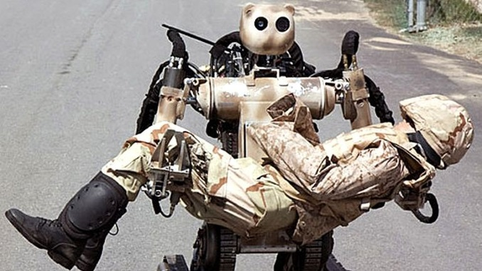

Of course using AI as a strategic military advantage is
what this page is going to be dedicated to. In a recent
article by Newsweek, it’s clear that Russia, China and
the US are spending billions of dollars trying to not get
left behind in the race for AI superiority. Exoskeletons,
drones and completely autonomous robot soldiers are already
here, if not fully vetted on the battlefield just yet.
With images like the one below of teddy bear head shaped
robots carrying brave soldiers off the battle field, who
wouldn’t want them by their side when the going gets tough?
Is there anything they can’t do better than humans?
Link to article
